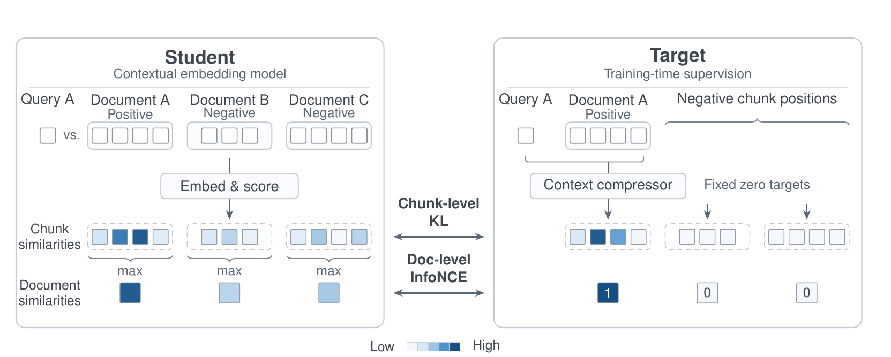
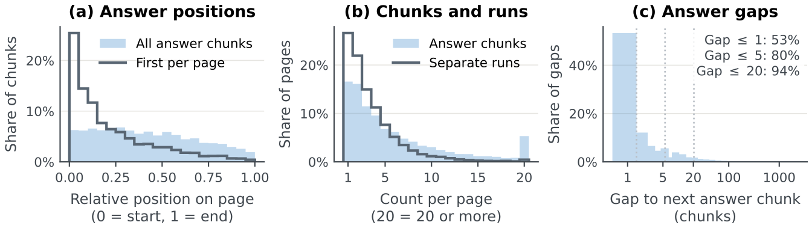

目录 · 9 节
1它到底在解决什么问题？2整体流程：老师只在训练时出场3老师怎么给每段打分？4学生怎么学这组分数？为什么还要对比损失？5两个新基准：答案段之外还要找到佐证段6结果说明了什么？7我认为它的局限8一个搜索团队可以怎么试9结论上下文 embedding 的训练和评测都默认一个问题在文档里只有一个相关段，这篇论文指出这个假设在 RAG 里不成立。回答一个问题往往还需要交代说的是哪个产品、哪一年的段落，可现有训练把同一文档里答案段以外的段一律当负例，这些佐证段反而被压低。作者拿一个现成的上下文压缩模型当老师，它原本负责从检索到的文档里挑出和 query 相关的片段，会给每个 token 打相关度分。embedding 模型去拟合由这些分汇总出的段分数，不再需要标注答案段。这一步就是蒸馏，一段的分数取段内最高几个 token 分的平均，所以有高有低，佐证段也能拿到分。在新建的诊断基准上，9B 模型前 10 段里找到答案的比例是 45.5%，最强基线 voyage-context-4 是 31.1%。去掉蒸馏、只用对比学习，在真实搜索 query 上找到答案段的比例从 86.3% 掉到 71.1%。
它到底在解决什么问题？
先看论文里的一个例子。一家物业公司有几千份租约，内容几乎一样，只有租户名、日期和地址不同。用户问「Park Avenue 5 号现在每月租金多少」，能回答的那句是「月租为 X 元」，可这句话在每份租约里都有；能确定是哪份租约的地址，写在同一份文档很远的地方。
把这份租约切成小段后，几段的情况大致如下（示意）：
| 段 | 内容 | 对这个问题的作用 | 单一答案段训练怎么看它 |
|---|---|---|---|
| A | 「本租约房屋位于 Park Avenue 5 号」 | 确认是哪份租约 | 负例 |
| B | 「自 2025 年起租金按年调整」 | 说明答案是不是当前租金 | 负例 |
| C | 「月租为 X 元」 | 直接回答 | 唯一正例 |
| D | 「物业联系方式」 | 无关 | 负例 |
这正是论文要解决的问题。现有的上下文 embedding 训练只把 C 标成正例，还会在同一份文档内拿 C 和其余各段做对比，A 和 B 因此被当成负例往下压；可读者或下游 LLM 恰恰需要 A 和 B，才能确认 C 说的是这份租约、是现在的租金。评测也有同样的盲区：ConTEB 等已有基准每个 query 只标一个正确段，只看它排没排第一，把 A、B 找回来不得分。
顺带交代背景：普通的分段 embedding 把每段单独编码，几千份租约里的 C 长得一模一样；上下文 embedding 整篇文档一次编码，让 C 的向量也带上 Park Avenue 的信息，已经解决了分段孤立编码的问题，论文正是在这类模型上改训练信号和评测。
整体流程：老师只在训练时出场

流程分四步：
| 步骤 | 输入 | 产出 |
|---|---|---|
| 1. 切段并编码 | 一篇文档，每个 batch 随机选一种切分方式，段间插分隔 token | 每段一个带全文上下文的向量 |
| 2. 老师打分 | query 和正样本文档 | 每个 token 的保留概率，再汇总成每段的分数 |
| 3. 段级蒸馏 | 老师的段分数、学生的段相似度 | 让学生在文档内的段排序贴近老师 |
| 4. 文档级对比 | 每篇文档取最高段的分数 | 让正样本文档排在 batch 里其他文档前面 |
学生这边的数据流很简单：文档整篇过一遍模型，每段的向量是段内 token 向量的平均；query 由同一个模型单独编码，向量也是它的 token 向量平均；两者点积就是相似度。关键分工是：老师决定一篇文档里哪段更该排前面，对比损失决定该排哪篇文档。推理时老师不出场，模型照常给每段输出一个向量，索引大小和普通分段索引一样，也不多一道重排。下面拆开讲。
老师怎么给每段打分？
老师是 Perplexity 答案流水线里已经在用的上下文压缩模型。它原本的工作是：检索到一篇文档后，挑出和 query 相关的片段，只把这些片段交给生成模型，省 token。具体做法是一个 cross-encoder，把 query 和文档拼在一起，给文档里每个 token 输出一个 0 到 1 的保留概率。
这个压缩模型本身是用 LLM 的句子级标签训练的，每句分三类：能单独回答问题的句子目标是 1，提供理解答案所需上下文的句子这一档整体映射到 0 和 1 之间的同一个软目标，LLM 只负责分档，不逐句打分；无关句子是 0。每个 token 的目标是它所在句子目标的平均，跨句的 token 按重叠多少加权。这样的三档监督教会老师区分答案、佐证和无关内容，它实际输出的是连续的 token 保留概率，通常答案句最高、佐证句居中、无关句最低。后面算段分数用的就是这些连续概率，这种有高有低的分数正好是单一答案段标签缺的东西。
为什么要按 token 打分，而不是直接给段打分？因为段的边界是训练时才定的。一段的分数取段内得分最高的 16 个 token 的平均，这样一段里只要有一小句关键内容就能拿到高分，不会被大量无关词稀释。换成按句切、按 128 token 切，都能当场算出段分数，不用重新标注语料。所以论文在每个 batch 里随机换一种切分方式。另一个好处是成本：这个老师比调用大 LLM 标注便宜得多，可以每个 batch 在线算。
拿上面的租约举例（示意）：老师可能给 C 段 0.9，A 段 0.6，B 段 0.5，D 段 0.05。旧方法给的目标是 C 为 1、其余为 0；新目标里 A 和 B 也有不低的分。
学生怎么学这组分数？为什么还要对比损失？
有了每段的分数，先把它变成一个分布：对正样本文档里各段的分数除以一个温度再做 softmax，其他文档的段一律给 0。学生这边，query 和 batch 里所有文档所有段的相似度同样做 softmax。训练目标是让两个分布接近，用的是 KL 散度：
其中 是老师给第 i 个 query 的段分布， 是学生给的段分布， 是 batch 里的 query 数。直觉是：学生不仅要知道哪段最好，还要知道第二、第三好的段大概差多少。
继续用租约算一下（示意，为了好算温度取 0.1，论文实际用 0.075）：C、A、B、D 的分数 0.9、0.6、0.5、0.05 除以 0.1 后是 9、6、5、0.5，softmax 之后 C 约占 0.94，A 约 0.05，B 约 0.02，D 几乎为 0。和只给 C 的目标相比，A 和 B 不再被要求压到 0，只是排在 C 后面。
因为老师把其他文档的段都设成 0，这个 KL 可以拆成两部分：一部分要求学生在正样本文档内部的段分布像老师，另一部分把学生的概率推向正样本文档、远离别的文档。所以蒸馏本身已经带了一点文档级信号。
那为什么还要单独的文档级对比损失？论文把一篇文档的分数定义成它所有段里和 query 最像的那段的相似度，再在 batch 内做 InfoNCE，让正样本文档排在其他文档前面。这一项梯度只到最匹配的那一段，不会把同文档的佐证段当负例。总损失里蒸馏权重 1，对比权重 2。
消融说明了两者各管什么：
| 训练目标 | Q2D-Chunk Answer@10 | ConTEB nDCG@10 | ViDoRe-V3 文本 nDCG@10 |
|---|---|---|---|
| 只用对比 | 71.1 | 68.1 | 58.7 |
| 只用蒸馏 | 85.8 | 82.4 | 60.3 |
| 两者都用 | 86.3 | 82.7 | 60.9 |
只用对比学习时，段级检索在两个段级基准上掉了约 15 个点，说明段级蒸馏是找对段的主要来源；只用蒸馏也保住了大部分文档级效果，对比项在三个基准上都再加了一点。
两个新基准：答案段之外还要找到佐证段
旧基准 ConTEB 每个 query 只标一个正确段，只奖励把它排第一。作者建了两个新基准，同时标答案段和佐证段。
context-bench 是一个受控的诊断集。作者往长文档里对抗式地注入内容，比如造一批只差租户名和日期的租约，按句切段，每个 query 只有一个正确文档，分别测三件事：能不能在几乎一样的文档里挑对那篇，能不能找到意思依赖上下文的答案句，能不能找到确认答案的佐证句。它由合作方 turbopuffer 盲评。
Q2D-Chunk 来自真实搜索流量。作者从生产日志里取超过 100 个字符的长搜索 query，因为长 query 的答案更可能散在页面多处，再让 LLM 改写成完整的问题，按语义边界切成最多 128 token 的段，标出答案段和佐证段。一页里的答案段中位数是 4 段，相邻的答案段算一块，这 4 段分成 3 块，从最前一块到最后一块横跨约 45% 的页面，这说明答案很少集中在一段里。因为长 query 常照抄页面原文，作者另做了三种改写版本：换掉关键词的同义改写、把实体名换成描述的间接问法、改成第一人称论坛帖的场景问法。

这张图说明的是基准为什么要这样建：真实 query 的答案经常散在一页的好几处，只标一个答案段的基准会漏掉其余部分。
结果说明了什么？
下表列出主要结果，单位都是 %。表里 Answer@10 的算法是：一个问题按要问的几部分分成几个答案组，看全库前 10 段覆盖了其中多少组，再对所有 query 取平均；context-bench 每个 query 只有一个答案组，所以就是命中率。
| 模型 | context-bench Answer@10 | Q2D-Chunk 基础 query | Q2D-Chunk 间接问法 | Q2D-Chunk 全部佐证找回 |
|---|---|---|---|---|
| pplx-embed-v2-context-9b | 45.5 | 86.4 | 82.6 | 37.5 |
| pplx-embed-v2-context-0.6b | 21.9 | 83.1 | 77.3 | 35.2 |
| voyage-context-4 | 31.1 | 83.9 | 80.2 | 33.1 |
| pplx-embed-context-v1-4b | 26.4 | 74.9 | 65.4 | 33.1 |
| Nemotron-3-Embed-8B（不看上下文） | — | 73.6 | 68.1 | 39.8 |
在 context-bench 上，9B 比 voyage-context-4 高 14.4 个点，不看上下文的 voyage-4-large 只有 6.4%。这说明在几千份几乎一样的文档里，不带全文信息的段向量基本找不到答案句。
在 Q2D-Chunk 上差距小得多，9B 比 voyage-context-4 高 2 到 3 个点，比自家上一代 v1 高 11 到 17 个点。真实 query 常重复页面原文的词，这让各家都容易一些；换成把实体名换成描述的间接问法，所有模型都掉分，但 9B 仍然最好。0.6B 在基础 query 上比 voyage-context-4 低 0.8 个点，但在佐证指标和覆盖全部答案组与佐证组所需的 token 数上反而更好，这对想用小模型的团队是个有用的信号。
还有一个对部署有用的结果：同一个 9B 模型如果整篇文档只输出一个向量，在 context-bench 上前 10 篇里找到正确文档的比例比按最高段排序低 29.8 个点；但在 Q2D-Chunk 上两种做法差距不到 1 个点。这说明只有在大量几乎一样的文档里挑一篇时，分段才是找对文档的关键，普通网页上压成一个向量问题不大。
作者还测了视觉文档检索 ViDoRe-V3。9B 只用文本数据训练，但底座是视觉语言模型，可以直接读页面图片；切段时把一页图的视觉 token 按行切成几条横带，带间插同样的分隔 token，每条带的 token 平均成一个向量。结果是 9B 每页只出一个向量就超过 Qwen3-VL-8B；每页切成 2 条横带时，超过 Nemotron-3.5-8B，索引只有 Nemotron-3.5-8B 的四分之一。这说明同一个模型可以文本和图片页面共用一套索引。
我认为它的局限
第一，佐证段仍然很难找。Q2D-Chunk 给每个 query 标了几个佐证组，每组对应读懂答案所需的一条上下文，比如答案属于哪个实体或哪个时期、在什么条件下成立、单位或定义是什么，组内任一段被找回就算找回。先把答案段从排序里去掉，再看前 10 段，全部佐证组都找回的 query 比例，9B 是 37.5%，最高的反而是不看上下文的 Nemotron-3-Embed-8B，也只有 39.8%。作者猜测是佐证段和 query 词面重合多，对不看上下文的模型有利。这说明新训练方法主要提升的是找答案段和找对文档，佐证段的问题只解决了一部分。
第二，老师不公开。整套方法依赖 Perplexity 线上的压缩模型，它的训练数据来自 LLM 的三档句子标注。别的团队要复现，得先训一个类似的 token 级相关度模型，这一步的成本论文没有算进去。
第三，两个新基准都由作者团队构建。context-bench 由 turbopuffer 盲评，但 query 类型是按 turbopuffer 客户的需求设计的；Q2D-Chunk 来自作者自家搜索流量。在这两个基准上领先的幅度，换到别的 query 分布未必一样大，真实流量基准上与 voyage-context-4 的差距也只有 2 到 3 个点。
一个搜索团队可以怎么试
- 先在自己的语料上量问题有多大：抽一批线上 query，人工或用 LLM 标出答案段和佐证段，看现有检索结果里佐证段被找回的比例。比例已经很高，就没必要换训练方法。
- 再做最便宜的老师：不用训练压缩模型，直接让 LLM 给每句打答案、佐证、无关三档，汇总成段分数，在小规模数据上替换单一答案段标签做蒸馏，对比只改标签后的 Answer@10 和佐证召回。
- 有效之后，再训一个 token 级的相关度模型当在线老师，这样可以每个 batch 随机换切分方式，顺便找到适合自己语料的段长。
- 线上上线前看两件事：下游 LLM 答案的正确率，以及为了覆盖全部答案和佐证需要喂给 LLM 的 token 数，这个 token 数直接决定成本。
结论
最关键的启发是：RAG 检索的训练标签应该告诉模型每段有多相关，而不只是哪段是答案。
| 维度 | 评价 |
|---|---|
| 问题重要性 | 高。多段答案和佐证段在真实 RAG 里很常见，旧训练和旧基准都没覆盖 |
| 方法创新性 | 中高。蒸馏本身不新，新在用按 token 打分的压缩模型当老师，使标签与切分方式无关 |
| 实验证据 | 中高。两个新基准加 ConTEB 和视觉检索，消融清楚；但新基准都出自作者方，真实流量上领先幅度不大 |
| 工程成本 | 中。推理和索引成本不变；训练需要一个 token 级相关度老师 |
| 是否值得尝试 | 值得。先用 LLM 三档标注做简化版，验证佐证段召回是否是自家系统的瓶颈 |
读完这篇，你觉得
夜读鸮记下了，谢谢你的反馈。
点一下即可，无需登录；再点一次撤回。只统计匿名次数，不记录你是谁。
讨论
欢迎补充实验细节、复现经验或不同看法。需 GitHub 登录。
正在加载讨论…